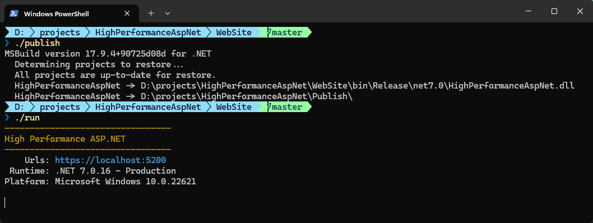
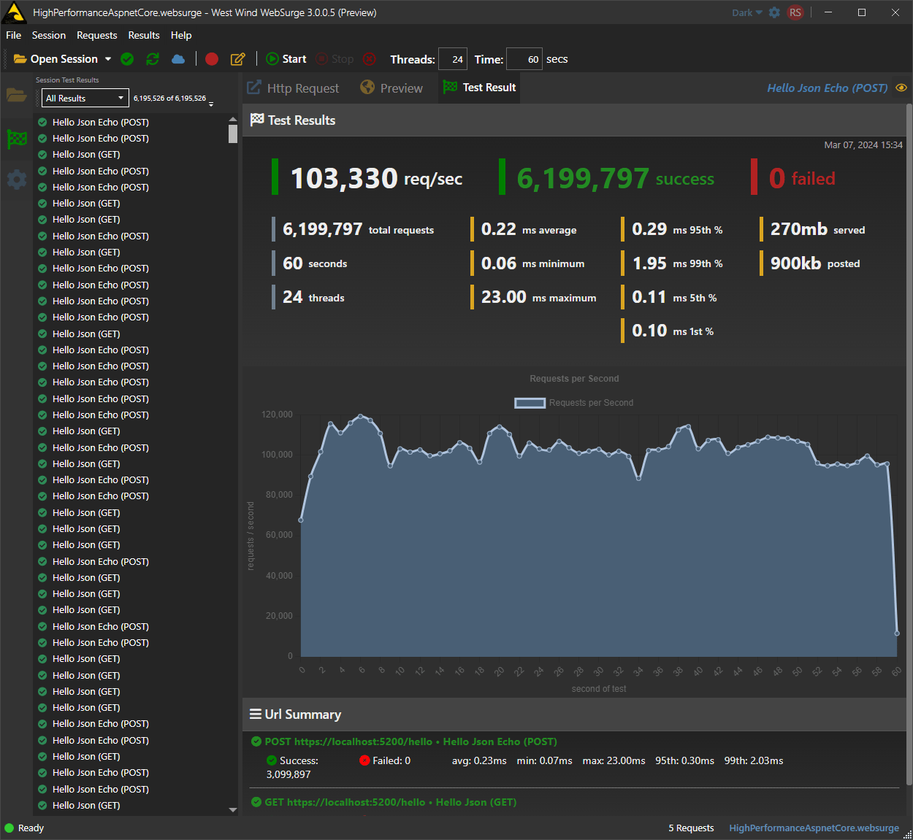
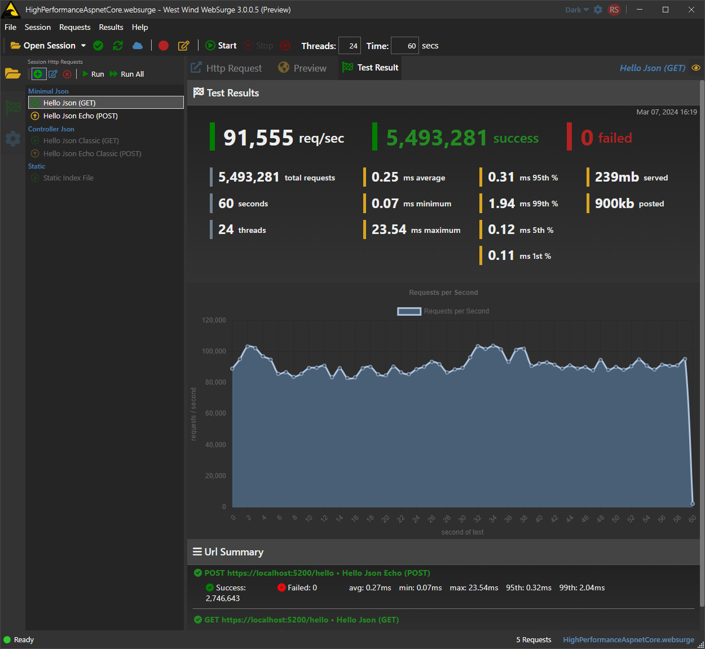
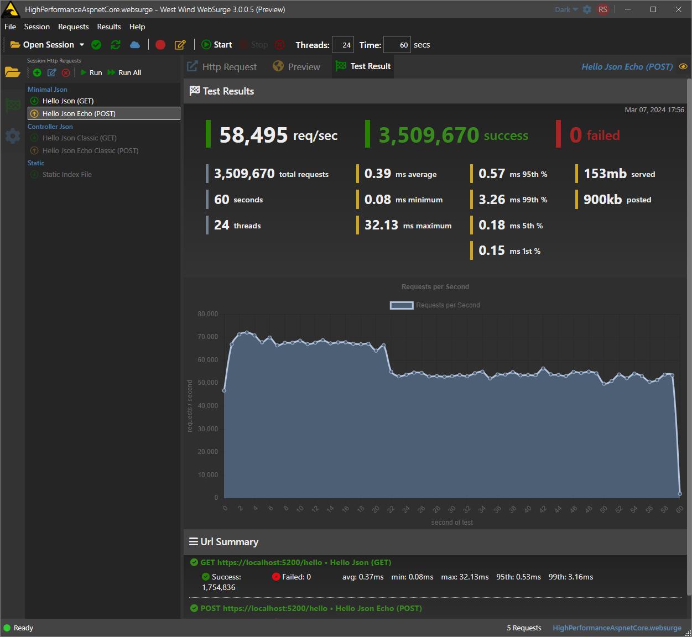

Comparing Raw ASP.NET Request Throughput across Versions
It's that time of year again to upgrade to a new machine, and one of the first things I often do once the machine is set up is run some performance tests of a simple ASP.NET application that tests raw request throughput of a couple of JSON do-nothing requests.
Mind you, this isn't indicative of any kind of real world application performance, but it's a pretty good yardstick to compare rough performance across .NET versions and my local computers, and how well it performs across versions and machines.
To me this is one of those apples to apples comparison when running the same app, on the same type of environment. It's not going to compare to anything other than that - so take what I write here in that context, and you can run these tests yourself on your own machines and setups and compare. This is a very simple project with literally 4 requests - 2 minimal API endpoints and 2 controller API endpoints.
Stupidly simple but I find this very practical to go through, even though this doesn't qualify as 'scientific' testing. It's merely a yardstick I can calibrate performance to, by comparing past and present results.
Another Day another New Machine
All of this has been brought on by my need to get a new dev machine recently. I've been having issues with my 12th gen Dell XPS laptop which is a few years old now. It's an I7 12th gen machine, with 32gb and a fast hard drive. It runs well enough for most day to day tasks, but for development and some testing tasks like this, the XPS runs into serious issues with overheating and CPU throttling. Extended use of Visual Studio and Resharper too, will often bring the XPS to its knees to where even typing becomes a problem.
So finally I decided to get a new machine and instead of getting another Dell. I decided I need a larger (ie. voluminous) laptop that can actually handle the heat and also go up to an I9 processor with more cores and better sustained performance. I ended up getting a relatively cheap gaming laptop - from CostCo no less (ha ha) - threw in Windows Pro and a faster and bigger drive, and paved the box without all the crap ware and gaming doodahs. I ended up with what seems to be one screamer of a machine for a lot less than a new XPS or other signature laptop would be, much less one with matching hardware.
CostCo was running a big discount on this, but unfortunately it's back to full price now. Even so it seems like a decent deal for this hardware. It's likely discounted as the new 14th gen chips are starting to roll out at nearly twice the price (for what looks only marginal performance gains in 14th gen).
There are also lots of combos of this machine on Amazon like this one:
The difference in performance from the XPS and the lack of throttling is immediately noticeable. Using Visual Studio with Resharper (arguably the most resource intensive client task on the planet 😁) is much smoother, along with noticeably more snappy all around operation. As is to be expected - it's not just the faster CPU with even more threads, but also the fact that this machine is big and has some serious cooling hardware inside with vents everywhere - this thing is much better suited to handle heat dissipation than the wafer thin XPS. So far I've seen no heat throttling even in our Maui non-AC environment which can get a little spicy at times.
Testing with ASP.NET
Anyway... one of the things I do is run these perf tests with this super simplistic ASP.NET application that basically creates a few do-nothing JSON API requests. I started this a long time ago with Classic ASP.NET and over the years have continued to update the Web app to reflect newer versions of .NET. There's no special optimization, just a few endpoints that spit back some dynamic JSON for both GET and POST operations.
Over the years the numbers have gone up and up as both hardware and .NET have improved.
For this iteration, I broke out the tests for .NET 7 and now 8 and split up the app into both Minimal API endpoints and Mvc Controllers as these have different performance characteristics.
Ultra Simple Requests
The idea here isn't to test real-world performance but to get a yardstick comparison of the simplest thing possible to push a request through the ASP.NET pipeline and compare across versions and machines. All this really measures is the throughput of the ASP.NET pipeline for the given mechanism - Minimal API or Controllers.
The code is simply:
Minimal APIs EndPoints
// inline in program.cs
app.MapGet("/hello", () =>
{
return new { name = "Rick", message = "Hello World" };
});
app.MapPost("/hello", (RequestMessage model) =>
{
return new { name = model.Name, message = model.Message };
});
Controller EndPoints
[Route("[controller]")]
public class ClassicController : ControllerBase
{
[HttpGet("hello")]
public object Hello()
{
return new { name = "Rick", message = "Hello World" };
}
[HttpPost("hello")]
public object Hello(RequestMessage model)
{
return new { name = model.Name, message = model.Message };
}
}
Running the Web App
Next I build the app and publish it locally then run the published app out of the publish folder and run it in production mode.
dotnet publish HighPerformanceAspNet.csproj -o ../Publish -c Release
../publish/HighPerformanceAspNet --urls https://localhost:5200
Here's the app running in a Terminal:

You'll want to make sure you run your tests in Production mode to avoid overhead for logging and other trace information - development will slow things down significantly especially if Console logging kicks in.
It's not required that you publish explicitly: You can use
dotnet runas well, but you have to make sure you explicitly set up your Environment toProductioninlaunchSettings.jsonor via command line parameters.Publishing automatically ensures you're using
Productionin the generated runtime config files.
Testing with WebSurge (or other load tester)
To test request I use West Wind WebSurge (yes I'm biased 😁), but you can use any other load testing tool like Bombardier, JMeter, Visual Studio Test etc.
Load testing always depends on the specific environment that you're testing and that what you are testing from and with, so especially with an unscientific test like this, keep in mind that the performance numbers only mean anything in relation to each other. They give you a general idea of what a given set of hardware is capable of running the test.
I broke out these tests into four sets on each machine:
- One set for Minimal APIs
- One Set for Controller APIs
Then run both of those for:
- .NET 8
- .NET 7
Then repeat on both machines (the old XPS and the new MSI box).
I9 MSI Laptop
I9 - .NET 8 - Minimal APIs

I9 - .NET 8 - Controllers

I9 - .NET 7 - Minimal APIs

I9 - .NET 7 - Controllers

Dell XPS I7 Laptop
I7 - .NET 8 - Minimal APIs

I7 - .NET 8 - Controllers

I7 - .NET 7 - Minimal APIs

I7 - .NET 7 - Controllers

A couple of things jump out of the results:
- The results are oddly consistent across machines and individual runs
- Minimal APIs handles roughly slightly >10% more than Controllers
- .NET 8.0 handles roughly 10% more than .NET 7.0
- This is a lot of requests handled on a local laptop!
- The I7 Dell show the Thermal throttling kicking in 1/4 of the way into tests
A little more info on the Test Run
Remember this all running on a local machine: both the server and the load tester are running on the same box. The test isn't particularly optimized either - finding an optimal set of simultaneous sessions (seems around 1.5-2x logical CPU count is usually optimal) could bump those numbers higher but it gets weird if there's too much load in the tester as it starts to interfere with the server CPU usage.
The tests run with no delays, essentially hammering requests as soon as the previous one completes. Each session runs sequentially (ie. 2 requests one after the other) then starts a new session.
Summary
I'm pretty excited to see these kind of performance numbers from a "laptop" - even if it's just about the cartable size and heft. For a portable low to mid-range device to have this much horsepower to run these tests is impressive. Kudos to the hardware and .NET for taking it for all it's worth and putting it to work.
These numbers mean nothing other than a comparison against the other runs here and different environments. I find this type of tests useful to compare old and new versions of ASP.NET and different kinds of hardware, to see how the core engine processing of ASP.NET works. Nothing more nothing less.
I often also add in a few additional tests like running on IIS or under WSL to compare. Having a baseline project that I carry through generations can be useful to gauge basic performance over time. You can of course do this with your own actual projects too, but it's obviously more complex with a fully configured application and getting it to run in a self-contained environment. A small project like this, running on native hardware without virtualization or container overhead is literally self contained and can just be run from the command line in full-on pedal-to-the-metal fashion just about anywhere that has the runtimes installed.
Now let's get back to work... 😁
Resources
 this post created and published with the
Markdown Monster Editor
this post created and published with the
Markdown Monster Editor